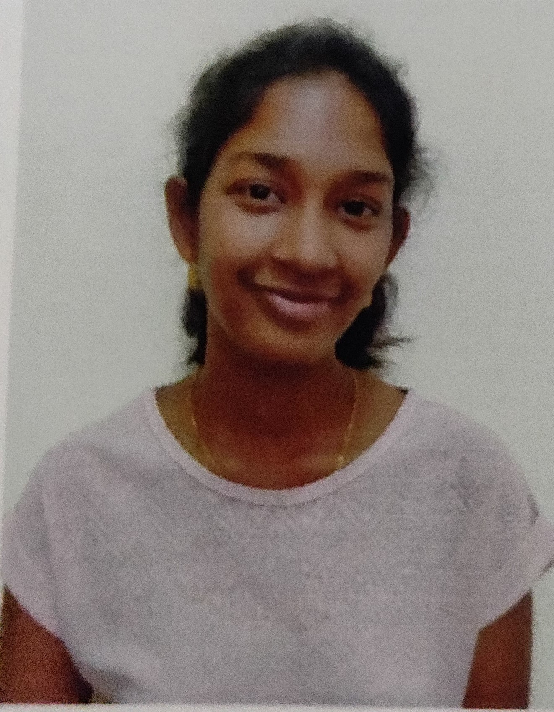

|  |
NALLAGATLA SWATHI E-mail id: swathivenkat1997@gmail.com 9008718039 | 9493661997 |
| UNIVERSITY | INSTITUTION | PERCENTAGE/CGPA |
|---|---|---|
| B.E(CSE) | GSSSIETW | 7.51 |
| Senior Secondary | Narayana Junior College | 93.5 |
| Higher Secondary | Keshava Reddy Residential School | 9.8(CGPA) |
Project Details: The main objective of the application of car rental management system is to require a temporary vehicles for the registered users. The admin can add and manage the vehicle details. The registered users or the guest users can contact for further details through contact page.
Project Details: The aim of the project is to model the flight of the bird with some degree of accuracy that is flight of dynamics of bird and to render it in a real-time 2D environment. It offers a rich mixture soaring and flapping capabilities that makes modelling of these birds flight in both interesting and entertainment manner.
Project Details: The aim of the project is to make user interactive program where in the user can view all the products that are available in our store. The objective of the project is to give the user a complete image of our store and the various kinds of products available. Customers can view the products online and then buy it from our store. They can also subscribe to notifications on new available products and a great deal of offers.
Project Details: Internet of Things is rapidly progressing in the present generation. This project is a combination of IoT and digital image processing. An automation system which conducts pre-processing and feature extraction techniques on the image has been developed to detect casualties in the agricultural fields. The system includes Raspberry pi using python programming language. It performs as a central coordinator of the system. This program is very helpful for massive agricultural fields. It makes it easy to detect flames and save the yield by using wireless sensors and cameras.
| Full Stack development: | Java |
| Udemy Course: | Python |
| Languages: | c, java, Python |
| Data base: | MySQL |
| Web Technology: | HTML,CSS |
| Name: | Nallagatla Swathi |
| DOB: | 08/10/1997 |
| Sex: | Female |
| Languages: | English,Telugu,Kanada |